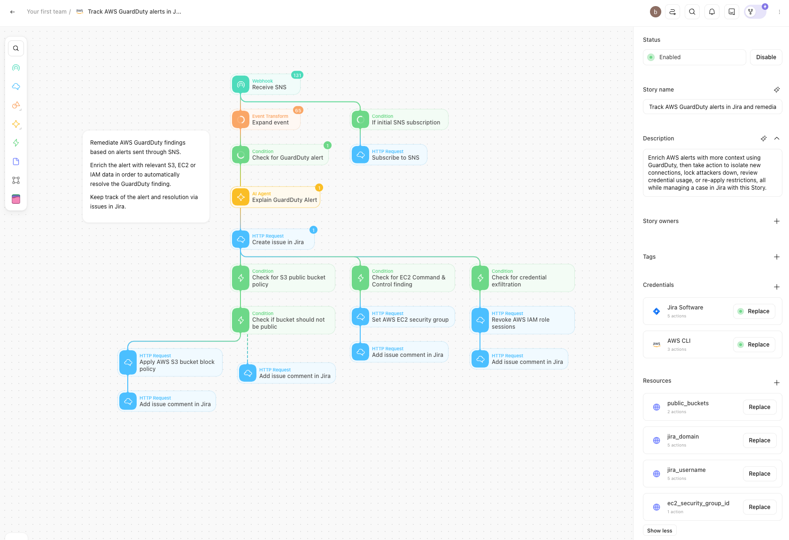
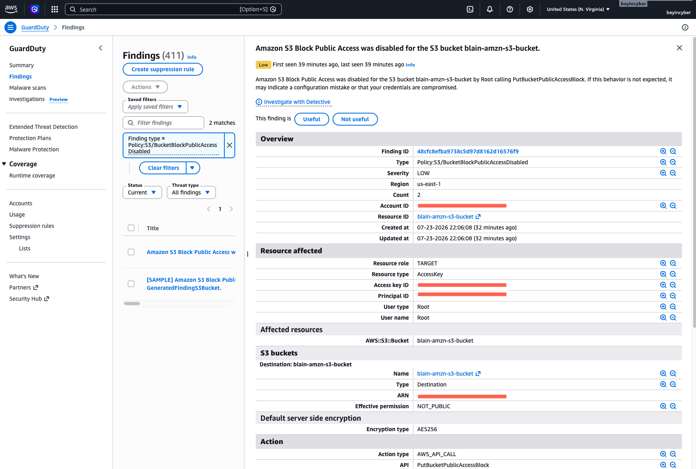
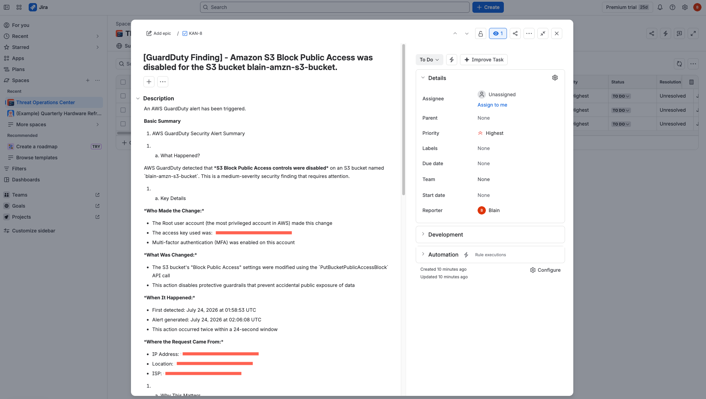
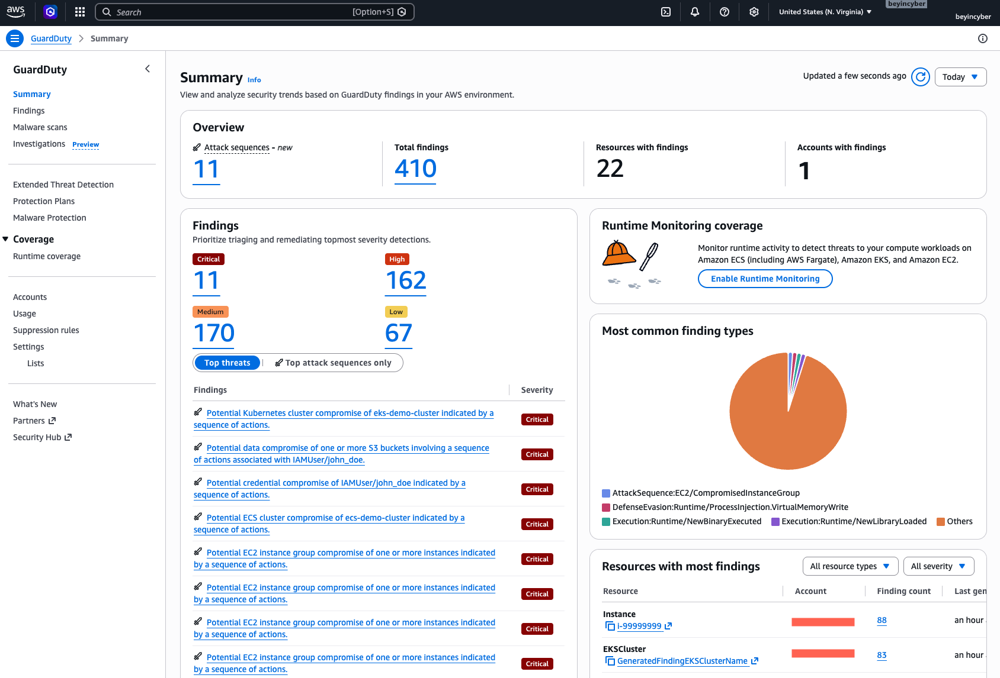

Cloud Security · SOAR Automation
An automated detection-to-remediation pipeline built with Tines, AWS, and Jira. GuardDuty findings are enriched by an AI agent, tracked as Jira cases, and remediated in real time.
Security teams drown in cloud alerts — this validation environment alone produced 410+ active GuardDuty findings across every severity level. Manually triaging each one is slow and inconsistent. This project automates the full lifecycle of a finding, from detection to a tracked, remediated case.
| Step | Action | Purpose |
|---|---|---|
| Receive SNS | Webhook | Entry point for SNS-delivered GuardDuty findings |
| Expand event | Event Transform | Flatten and normalize the raw SNS/GuardDuty payload |
| If initial SNS subscription | Condition → HTTP Request | Auto-confirms the SNS subscription handshake |
| Check for GuardDuty alert | Condition | Filters out non-finding traffic |
| Explain GuardDuty Alert | AI Agent | Generates the human-readable summary of the finding |
| Create issue in Jira | HTTP Request | Opens a tracked case with the enriched context |
| Finding type | Detection | Response action | Follow-up |
|---|---|---|---|
| S3 exposure | Check for S3 public bucket policy → verify bucket should not be public | Apply S3 Block Public Access policy | Comment result to Jira |
| EC2 command & control | Check for EC2 C2 finding | Update EC2 security group | Comment result to Jira |
| Credential exfiltration | Check for credential exfiltration | Revoke IAM role sessions | Comment result to Jira |
Credentials: Jira Software, AWS CLI · Resources: public_buckets jira_domain jira_username ec2_security_group_id

SNS ingestion, AI enrichment, Jira case creation, and three conditional remediation branches, laid out in Tines.

Policy:S3/BucketBlockPublicAccessDisabled — S3 Block Public Access was disabled on a bucket by the root user via PutBucketPublicAccessBlock.

The AI-enriched Jira ticket created by the workflow: what happened, who made the change, what changed, when, and where the request originated.

The environment used for validation — 410+ findings across all severity levels and multiple attack sequences.
To prove the pipeline works end-to-end, findings were generated in a controlled AWS environment and traced through the workflow: